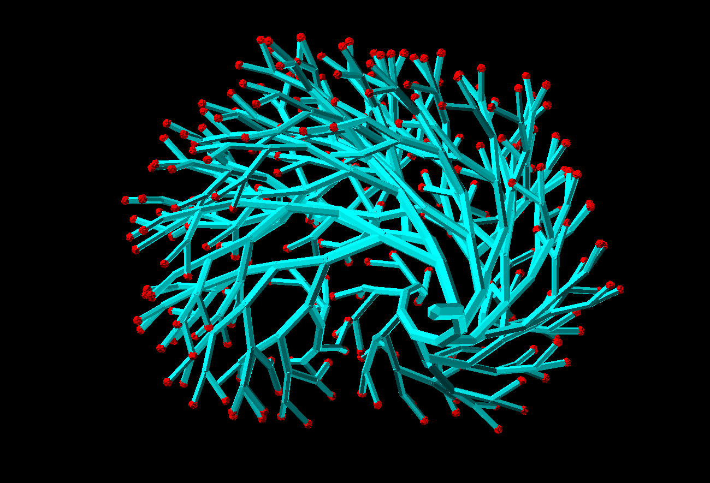

link to this page
Catalict

Catalict is a posthuman hyperintellect widely recognized as the matter-of-fact ruler of the Noca Bell habitat cluster. He is known to value diversity, best illustrated by his apparent mission to peacefully collect as many species and cultures (sometimes including ones mutually hostile to some degree) within Noca Bell as he can get away with.
 Catalict uses an avatar of a heavily stylized fractal boid to mark his presence in virtual spaces, sometimes mistaken for a tree. A front-facing picture of it in a specific pose is also typically the symbol the catalict is identified by.
Catalict uses an avatar of a heavily stylized fractal boid to mark his presence in virtual spaces, sometimes mistaken for a tree. A front-facing picture of it in a specific pose is also typically the symbol the catalict is identified by.
In general, embodiment is rare to witness from Catalict, as he generally maintains the appearance of an entity that exists primarily within the information realm, and reaches out to rearrange the world as needed, rather than the other way around. He usually only partakes in physical interactions by taking control of the environment (remotely opening doors, turning cameras, operating wall-mounted manipulators and displays or simple drones), but on occasion where he deems it fitting he may collect a mass of various kinds of micrites and macrites to behave as one coherent form to present himself with.
Mental function
Catalict's mind and subjective experience of the world differ greatly from those of a typical human.
His perception of time and causality is completely inhuman, and there is not much difference between space and time as far as subjective experience is concerned. Whether an event lasts a long time or happens nearly instantly does not matter, and he will give as much thought to event as he sees necessary to consider all the important details, the only exception being if he simply does not have access to sufficient computing power, but even then he does not have a subjective experience of time, merely of the causal order of events, which itself is not simple either.
Catalict's mind elegantly handles gaps in his knowledge to produce every possible path and branch of events, every uncertainty accounted for whether branching towards the future or the past* (or in any other direction **), leaving him to only pick the outcome he wants and then know what to do, no guessing necessary - one would think there is an alternative "know what to do or with certainty know that he does not know what to do" but this case is already included, finding out how to achieve your goal is just part of the path, so is finding out what you need to find out.
* by necessity under his mental function, there is no single past unless he simply has complete and absolute certainty about past events. Somewhat like a normal human might think a certain event played out one way but then learn information that makes them reconsider it, Catalict constantly re-evaluates the past based on the present and projected futures, but he considers all possible pasts at once instead of having to pick one - not to imply a human isn't also capable of doing that to a very limited degree, but unlike a human he is radically more capable at considering them all and acting upon them all at the same time to make the most informed decision possible even when faced with uncertainty.
** branching of time in directions that are neither past nor future is just a fun quirk of Catalict's perception, which is useful but not necessarily real, much like the tendency of human vision to redefine what counts as white based on other colours present in the environment makes it easier to process but does not actually correspond to anything real.
relevant pages